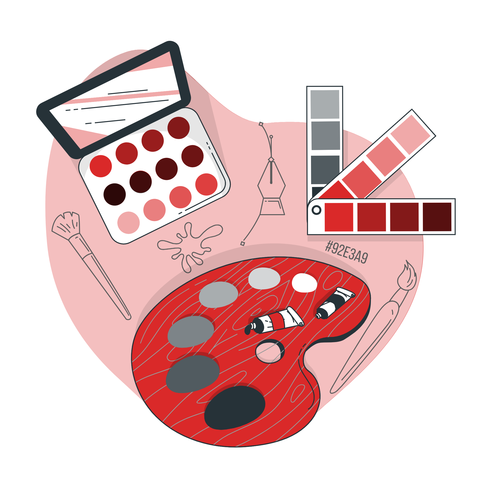

SKILLS

Webデザイン
Wix、WordPressを用いてWebサイトの制作ができます。Adobe Photoshop、Adobe Illustratorを使用したデザイン制作も可能です。
見やすく、使いやすいを意識して制作いたします。

コーディング
前職でHTML、CSSを使用した業務用サイトの改修経験があります。デザインに忠実にコーディングができます。
JavaScript、jQueryを用いた動的なサイト制作も可能です。

イラスト
人物を描くことが得意です。デフォルメ、等身どちらも描くことができます。